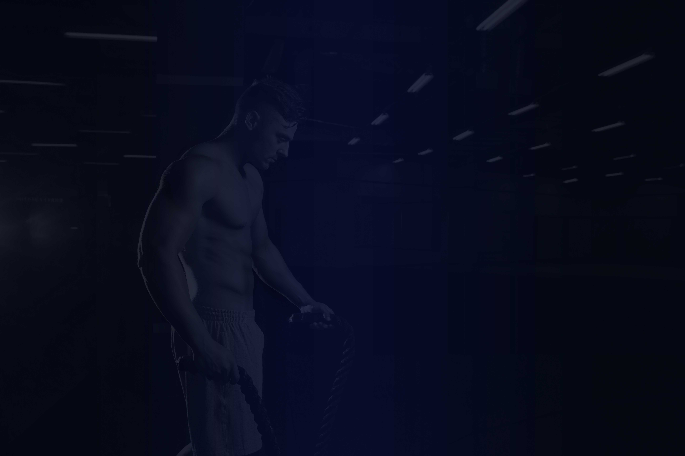

ПРАВИЛА ПОСEЩЕНИЯ ФИТНЕС-ЦЕНТРА «KING»
- 1. Клиентом Клуба может стать любой гражданин, достигший 14-летнего возраста и оплативший стоимость услуг в соответствии с типом клубной карты. Клубная карта, в зависимости от типа, включает в себя:
- срок действия;
- время посещения клуба;
- наличие определенного количества неиспользованных посещений, предусмотренных данным типом клубной карты (в соответствии с действующим прейскурантом).
- 2. Пропуском в Клуб является клубная карта, Клиент обязан предъявлять клубную карту при входе в Клуб, в обязательном порядке зарегистрироваться на рецепции. В случае разового отсутствия клубной карты, Клуб оставляет за собой право отказать в доступе на территорию Клуба.
- 3. Оплата за услуги принимается в наличной форме в гривнах в кассу фитнес-клуба или через терминал по платежным картам. Оплата за клубную карту, внесенная в кассу Клуба, не возвращается.
- 4. Услуга считается оказанной Клубом в полном объеме после регистрации прохода Клиента в Клуб (автоматического списания посещения с клубной карты Клиента), независимо от того, приступил Клиент к занятиям внутри клуба или сразу покинул его.
- 5. Членство в Клубе является персональным и не может быть передано или использовано другими лицами без переоформления клубной карты. Клубная карта (не более одного раза) может быть переоформлена на другое лицо по согласованию с администрацией Клуба.
- 6. При первом посещении Клуба Клиенту необходимо пройти процедуру регистрации в Клубе: заполнение контактных данных, фотографирование (на рецепции клуба), в противном случае Клуб имеет право не допустить Клиента до занятий.
- 7. Клиент Клуба имеет право получить, и обязан возвратить на рецепцию выданные для получения услуг ключи с номером от шкафчика раздевалки, строго соблюдать временные ограничения на посещение Клуба в соответствии с условиями клубной карты. В случае утери (или порчи) клубной карты, шкафчика раздевалки, ключа или любого другого инвентаря, выдаваемого Клубом на время занятий, Клиент Клуба обязан возместить причиненный ущерб в размере, установленном Клубом.
- 8. В период нахождения в Клубе личные вещи Клиента Клуба должны храниться в шкафах раздевалки. Клуб не несет ответственности за вещи, оставленные вне закрытого шкафа на территории Клуба. После занятия Клиент Клуба обязан освободить шкаф от личных вещей и сдать ключ на рецепцию. Для обеспечения сохранности ценных вещей и документов Клиент Клуба имеет право пользоваться специально отведенными ячейками за дополнительную плату согласно прейскуранту услуг.
- 9. Вход в тренажерный зал разрешается только в спортивной одежде и обуви (верхняя часть тела должна быть закрыта). Клуб имеет право не допускать Клиента Клуба на тренировку в обуви, не предназначенной для конкретного типа занятий. Клиент Клуба не имеет права использовать для занятий шипованную обувь.
- 10. При первом посещении Клуба Клиенту необходимо пройти инструктаж у тренера и в дальнейшем строго придерживаться рекомендаций инструкторов и персонала Клуба.
- 11. При занятии на тренажере необходимо использовать индивидуальное полотенце.
- 12. Выдача полотенец происходит на платной основе с внесением залога. Возврат залога происходит в тот же день по предъявлению арендуемого изделия в надлежащем виде. За отсутствующие или испорченные изделия залог не возвращается.
- 13. Клуб не является медицинским учреждением и не осуществляет оказание услуг по медицинскому обеспечению Клиента. До начала посещения тренировок в фитнес-клубе Клиенту рекомендуется самостоятельно пройти медицинское обследование.
- 14. Клуб не несет ответственности за состояние здоровья и возможные травмы Клиента Клуба в следующих случаях:
- при нарушении Клиентом Клуба правил посещения Клуба;
- если Клиент Клуба тренируется самостоятельно;
- при нарушении Клиентом Клуба рекомендаций врачебного заключения;
- если травма не была зарегистрирована в Клубе и не составлен соответствующий акт;
- если травма получена по вине самого Клиента Клуба или получена от противоправных действий третьих лиц.
- 15. В целях соблюдения правил общей гигиены перед посещением бани, сауны Клиент Клуба обязан принять душ. Клиент Клуба обязан соблюдать чистоту во всех помещениях Клуба, которые используются им до, во время и после тренировок.
- 16. Клиент Клуба, в период нахождения в Клубе, обязуется соблюдать правила общественного порядка (вести себя культурно, не использовать в своей речи ненормативную лексику, не доставлять неудобства другим посетителям, и т.д.). Клиент Клуба обязан покидать территорию Клуба не позднее установленного времени его закрытия.
- 17. Для обеспечения безопасности тренировочного процесса в тренажерном зале, Клиенту Клуба настоятельно рекомендуется выполнять упражнения с весами, определенными инструктором Клуба. С целью недопущения травматизма, силовые упражнения с максимальными весами в тренажерном зале выполнять в обязательном порядке с инструктором или партнером.
- 18. Если во время тренировки возник вопрос, как пользоваться тем или иным тренажером, или любой другой вопрос, необходимо обратиться к дежурному инструктору тренажерного зала.
- 19. После окончания тренировок Клиент Клуба обязан вернуть спортивный инвентарь («блины», гантели и т.д.) в специально отведенные места в надлежащем состоянии. Клиент Клуба обязан возместить ущерб, причиненный утерей или порчей оборудования, инвентаря и иного имущества Клуба.
- 20. Групповые занятия в Клубе проводятся по установленным расписаниям. Клуб вправе вносить изменения и дополнения в расписание и осуществлять замену заявленного в расписании инструктора. Клиент Клуба обязан приходить на групповые занятия без опозданий.
- 21. Срок действия клубной карты может продлеваться только в случае, если занятие не состоялось по вине клуба. Во всех остальных случаях пропуска занятий претензии по вопросам оплаты, возврата денег или переноса занятий администрацией Клуба не принимаются, исключения составляют абонементы сроком действия более трех месяцев (только согласно условиям продажи). О заморозке клубной карты Клиент Клуба за 24 часа должен уведомить Клуб в устной форме, по телефону. Суммарный срок приостановления действия клубной карты не может превышать при годовой карте 21 день, при полугодовой 14 дней.
- 22. На Клиента Клуба, оплатившего разовое посещение, распространяется действие настоящих Правил.
- 23. Клуб вправе в течение срока действия клубной карты изменять стоимость дополнительных услуг, менять тренерский состав.
- 24. Во время проведения клубных мероприятий Клуб имеет право ограничить зону, предназначенную для тренировок. Клуб имеет право закрывать другие помещения на время проведения специальных мероприятий и/или ремонтных, профилактических работ. Об указанных обстоятельствах Клиенты Клуба информируются заранее путем размещения объявлений на информационных стендах в помещении Клуба, не менее чем за 24 часа до проведения указанных мероприятий. При этом действие клубной карты не продлевается.
- 25. Клиент Клуба уведомлен об осуществлении в здании Клуба и на прилегающей к зданию территории видеосъемки и видеонаблюдения.
- 26. Клуб вправе изменять часы (режим) работы. Информация об изменении часов (режима) работы доводится до Клиентов Клуба путем размещения на информационных стендах в помещении Клуба.
- 27. На территории Клуба запрещено:
- находиться в состоянии алкогольного, наркотического опьянения;
- курить;
- проносить в Клуб любое холодное и/или огнестрельное оружие, взрывоопасные, токсичные и сильно пахнущие вещества;
- приносить в Клуб напитки и продукты питания (за исключением детского питания), принимать пищу и напитки в не предназначенных для этого местах;
- входить на территорию, предназначенную для служебного пользования, за исключением случаев, когда имеется специальное приглашение;
- самостоятельно регулировать любое инженерно-техническое оборудование;
- размещать объявления, рекламные материалы, проводить опросы и распространять товары на территории Клуба без письменного разрешения администрации Клуба;
- входить на территорию Клуба с домашними животными;
- въезжать на территорию Клуба на роликовых коньках, велосипедах, скейтбордах;
- осуществлять кино- и фотосъемку в Клубе без письменного разрешения администрации Клуба;
- беспокоить других посетителей Клуба.
- 28. Нарушение Клиентом Клуба настоящих правил влечет за собой отказ Клиенту в предоставлении ему услуг.
- 29. Клуб не несет ответственности за технические неудобства, вызванные проведением городскими или муниципальными властями профилактических, ремонтно-строительных и иных работ (форс-мажорные обстоятельства).
- 30. Все найденные на территории Клуба вещи регистрируются в специальном журнале и хранятся в течение 1 месяца, после чего утилизируются, о чем составляется соответствующий акт.
- 31. В случае необходимости и для улучшения качества услуг Клуб имеет право в одностороннем порядке дополнять и изменять настоящие Правила. Новые Правила вступают в силу для Клиента Клуба с момента их размещения для всеобщего ознакомления на информационных стендах в помещениях Клуба.
- 32. Порядок посещения клуба детьми.
- 32.1. Дети в возрасте от 7 лет раздеваются согласно полу ребенка в мужской или женской раздевалке.
- 32.2. Родители или сопровождающие детей лица несут персональную ответственность за детей на территории клуба.
- 32.3. Дети до 13 лет могут посещать клуб только в сопровождении родителей или уполномоченных лиц, достигших совершеннолетия.
- 32.4. Пребывание детей младше 13 лет на территории клуба без сопровождения родителей или уполномоченных лиц запрещено.
- 32.5. Родители или сопровождающие лица должны своевременно привести ребёнка на тренировку (групповое занятие), а также вовремя забрать по окончанию тренировки. За детей, находящихся в клубе после занятий без присмотра родителей или сопровождающих лиц, клуб ответственности не несет.
- 32.6. Во избежание травм дети, опоздавшие к началу занятия более чем на 10 минут, на занятие могут быть не допущены.
- 32.7. Администрация Клуба и тренер несут персональную ответственность за ребенка только во время проведения занятий и во время его нахождения в детской комнате Клуба.